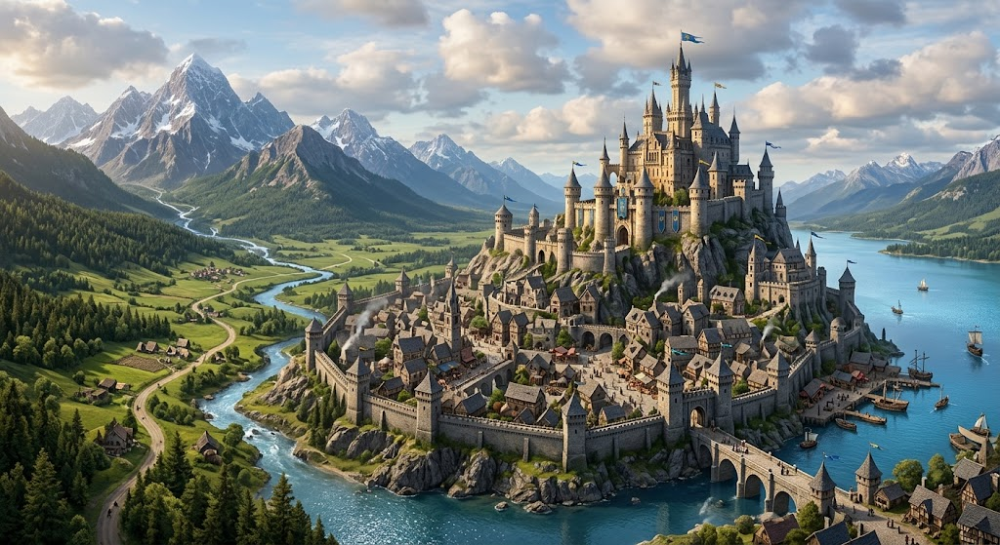

Aetherion

Atherion is a kingdom renowned for its chivalry, courage and unwavering devotion to justice. A land of towering castles, sprawling farmlands and ancient fortresses, it has long stood as a beacon of order and civilisation among the known worlds. Its people are proud, its knights are respected, and its roads are travelled by adventurers seeking fortune, glory or simply a chance to make a difference.
At the heart of Atherion lies its capital, a great city built around the royal citadel, where the banners of the kingdom fly proudly above its walls. From here, King Jarvan IV rules, a monarch whose reign is founded upon the ideals of honour, duty and justice. Under his guidance, Atherion has prospered, and the kingdom has become known for its relatively fair laws, strong institutions and willingness to defend those who cannot defend themselves
Yet Atherion is not a kingdom without hardship. Its borders are vast, its wilderness dangerous, and its people are not strangers to conflict. Bandits roam the less-travelled roads, ancient ruins hide forgotten dangers, and rumours of strange occurrences beyond the kingdom's borders occasionally reach the royal court. For this reason, the kingdom has always relied upon more than its armies. It depends on those willing to venture beyond the safety of its walls
The tragedy of Atherion
Of all the known worlds, Gravemourn has one of the closest connections to Atherion. The pathway between them is ancient, predating even the oldest records of Atherion's founding. It is believed that the connection has always existed, though its exact location has shifted throughout history. There are stories of entire villages disappearing overnight, of graveyards where the dead refuse to remain buried and of strange figures appearing along the kingdom's borders.
The proximity of Gravemourn has led to certain peculiar traditions in Atherion. Burial ceremonies are treated with particular reverence, and it is customary for the dead to be buried with their names and deeds recorded, so that they may never be forgotten. Some believe that remembering the dead is the only thing preventing them from being claimed by Gravemourn.
The royal court maintains a close watch over the pathway, and only a handful of individuals are entrusted with knowledge of its location.
Perhaps the greatest tragedy in the history of Atherion's royal family is the disappearance of Jarvan IV's brother. Born into the royal bloodline, he was once considered a promising successor to the throne and a respected figure among the kingdom's knights. Unlike Jarvan, whose duties were always closely tied to the crown, his brother was drawn towards exploration and the mysteries of the worlds beyond Atherion.
His fascination eventually led him to investigate the ancient connection between Atherion and Gravemourn. During an expedition to the pathway, he and his companions vanished without a trace.No bodies were recovered. No survivors returned. Only scattered remnants of the expedition were ever found. The official royal account declares the prince deceased, presumed lost within Gravemourn. Yet Jarvan has never accepted this conclusion.